Hướng dẫn sử dụng — từ tiền vào tài khoản đến tờ khai thuế
Từ lúc chưa có gì đến lúc mở được sổ.
kh-tai-chinh.zip → Cài đặt → Kích hoạtCùng một sổ, mở được ở hai chỗ:
| Trong wp-admin | Menu Tài Chính K&H bên trái. Quen thuộc nếu đã dùng WordPress. |
|---|---|
| Bản web riêng | tenmien.vn/tai-chinh/ — màn hình rộng hơn, không lẫn với menu WordPress. Vẫn phải đăng nhập. |
tenmien.vn/?khtc_man=tong-quan.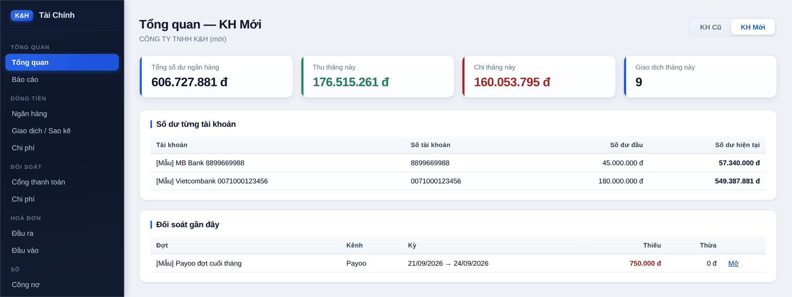
Plugin không có mật khẩu riêng. Nó dùng tài khoản WordPress, để WordPress lo băm mật khẩu và khoá khi nhập sai nhiều lần.
Quản trị viên vào Hệ thống → Người dùng:
Họ đăng nhập ở tenmien.vn/wp-login.php rồi mở tenmien.vn/tai-chinh/.
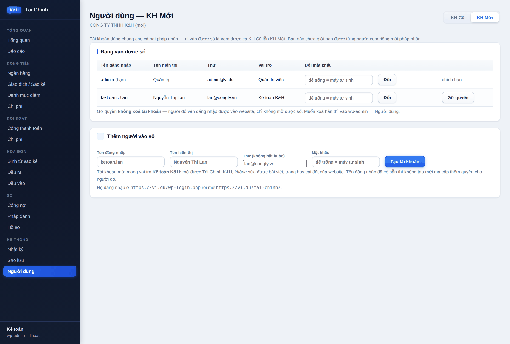
Hai nút KH Cũ / KH Mới ở góc trên bên phải mọi màn hình. Hai pháp nhân có sổ riêng hoàn toàn: tài khoản riêng, hoá đơn riêng, danh mục riêng, số hoá đơn đánh riêng.
Vào Hệ thống → Sao lưu, bấm Nạp dữ liệu mẫu. Máy dựng một bộ số giả ăn khớp với nhau: 13 tháng sao kê, danh mục điểm, hoá đơn, chi phí, hợp đồng, một đợt đối soát — đủ để mọi màn hình ra kết quả thật chứ không rỗng.
Mọi dòng mẫu mang dấu [Mẫu]. Xoá lại bằng một nút, và nút xoá chỉ đụng đúng những dòng đã nạp.
Hai thứ phải có trước khi nhập số. Thiếu chúng thì mọi bước sau đều kẹt.
Dòng tiền → Ngân hàng. Mỗi tài khoản cần tên, số tài khoản, và số dư đầu tính đến một ngày mốc.
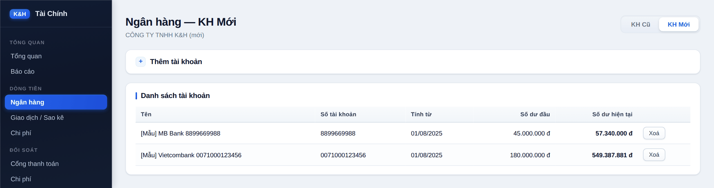
Mỗi dòng tiền QR về tài khoản mang một mã cửa hàng như 1W642MMO1S. Tự nó chỉ là một khoản tiền không tên. Danh mục điểm nói mã đó thuộc gian nào, xuất hoá đơn dưới tên nào, mã Misa gì, khu vực nào.
Không có bảng này thì không gom được sao kê thành hoá đơn. Đây là thứ duy nhất nối nửa đầu của quy trình với nửa sau.
Dòng tiền → Danh mục điểm → mở khung Nạp danh mục hàng loạt → dán bảng vào. Mỗi dòng tám cột, cách nhau bằng Tab (copy thẳng từ Excel):
| 1 | Mã cửa hàng | 5 | Mã Misa |
|---|---|---|---|
| 2 | Tên gian | 6 | Khu vực |
| 3 | Mã điểm bán | 7 | Dịch vụ |
| 4 | Tên điểm xuất hoá đơn | 8 | Số tài khoản |
Một điểm thường có nhiều mã cửa hàng — mỗi máy POS một mã. Cứ khai đủ, máy gom theo tên điểm xuất hoá đơn nên vẫn ra một tờ.
Dùng cho mã test, mã vãng lai, gian đã đóng. Tiền của điểm bỏ qua không vào hoá đơn nào, nhưng vẫn được đếm riêng và hiện ra — không biến mất lặng lẽ.
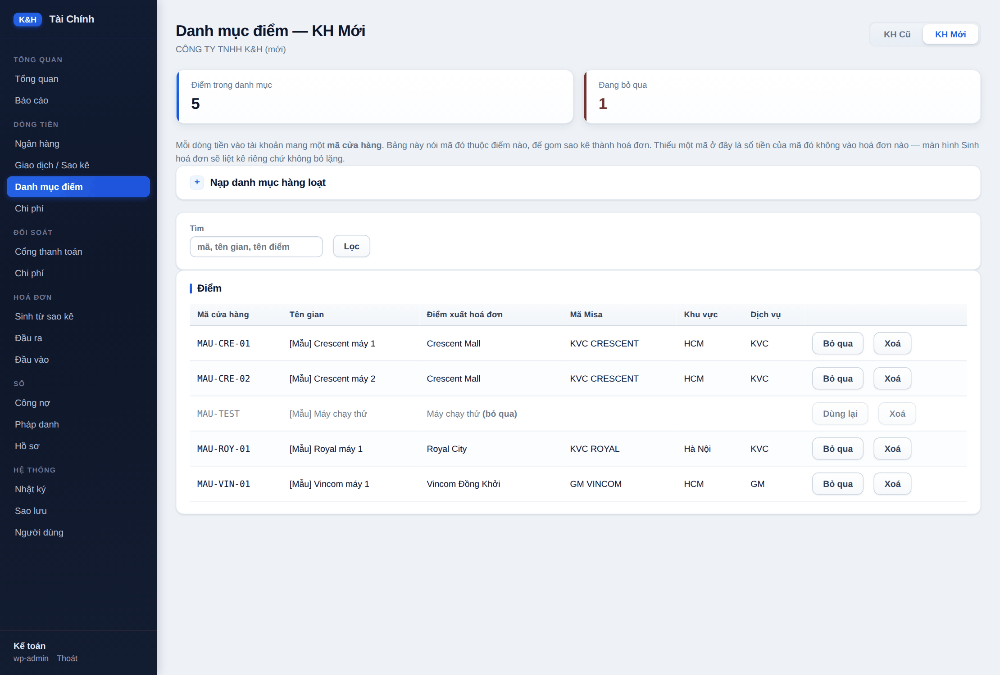
Sáu màn hình nhập. Màn hình nào cũng có ô dán bảng, copy thẳng từ Excel.
Dòng tiền → Giao dịch / Sao kê. Chọn tài khoản, dán sao kê. Mỗi dòng sáu cột:
Ngày · Diễn giải · Số tiền · Thu/Chi · Mã giao dịch · Mã cửa hàng
Cột Thu/Chi bỏ trống thì số dương là Thu, số âm là Chi.
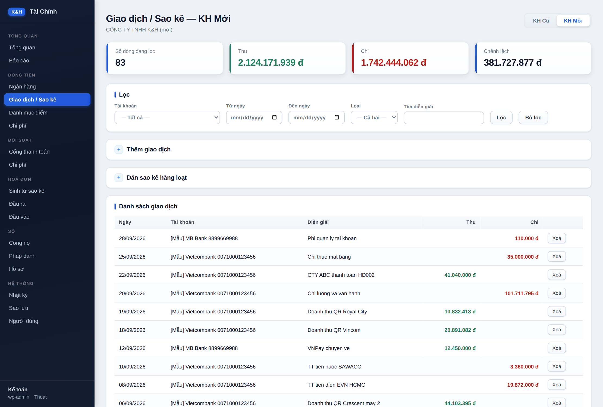
Dòng tiền → Chi phí. Ghi khoản chi theo bộ phận × khoản mục, một bảng cho cả công ty. Danh mục bộ phận và khoản mục sửa được ngay trên trang, tách riêng theo từng pháp nhân.
Bảng cộng chéo ở dưới cho biết bộ phận nào tiêu vào khoản gì.
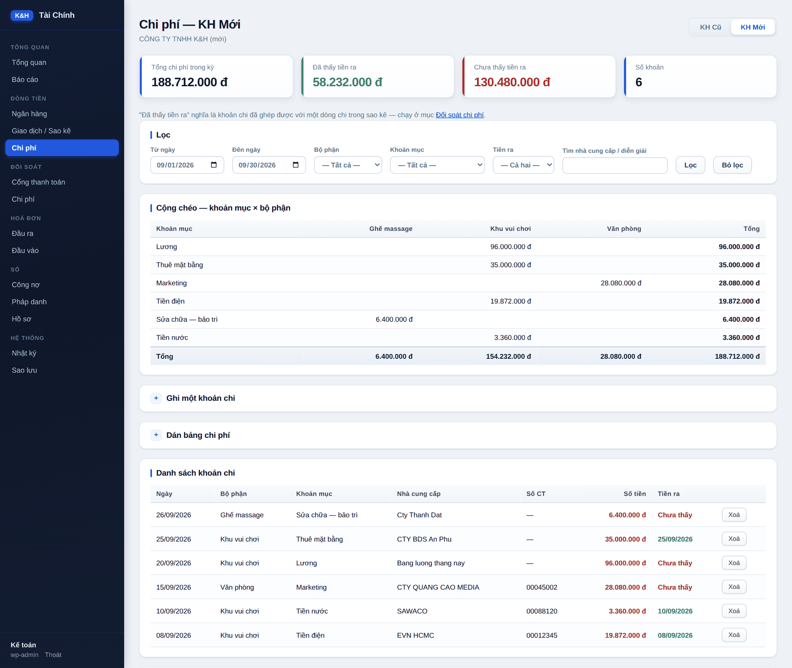
Hoá đơn → Đầu ra. Nối thẳng với công cụ Đối soát VAT: dán vào và xuất ra đúng 22 cột của file đó, đúng thứ tự, không phải sắp lại.
Bảng gom theo thuế suất chính là mấy dòng điền vào tờ khai GTGT.
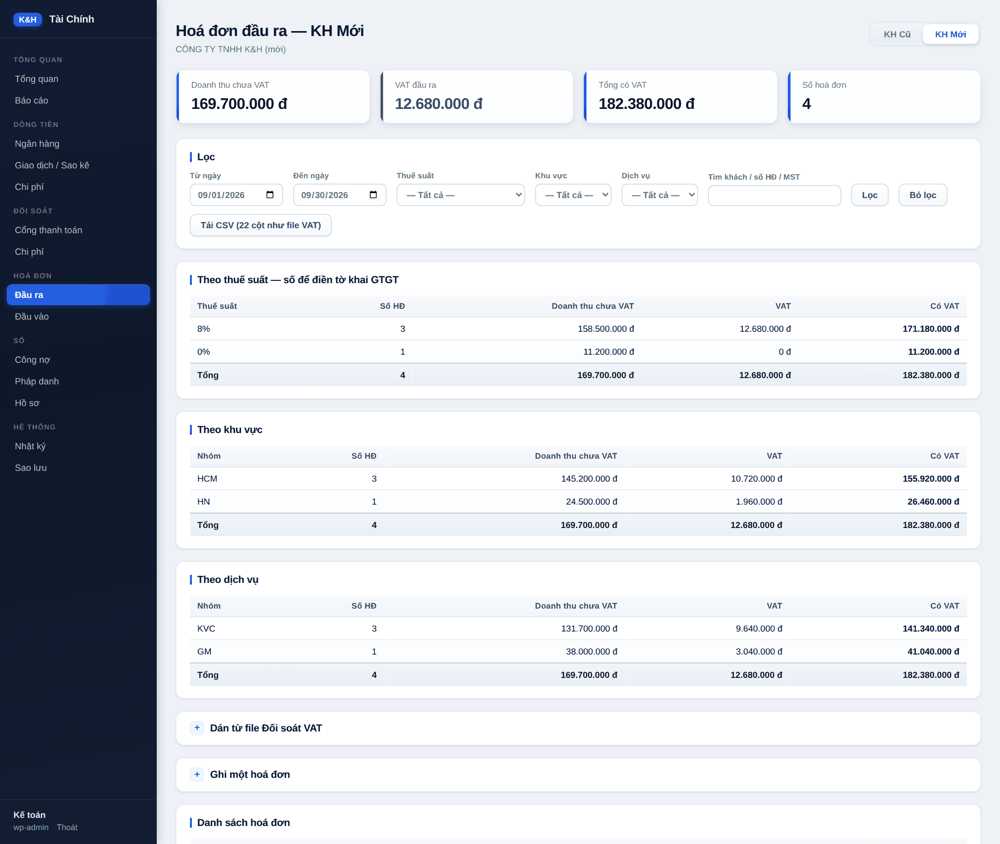
Hoá đơn → Đầu vào, để tính VAT được khấu trừ.
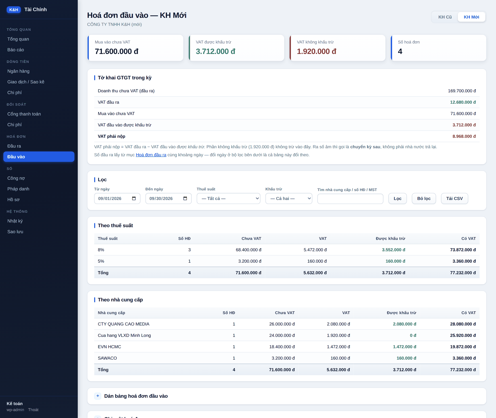
Sổ → Pháp danh. Sổ hợp đồng thuê gian hàng và hợp đồng nhà cung cấp. Cảnh báo hợp đồng sắp hết hạn trong 60 ngày hoặc đã quá hạn, đếm hợp đồng chưa có bản đủ dấu.
Bảng doanh thu chia sẻ ghép với hoá đơn đầu ra qua mã điểm nội bộ. Hợp đồng chưa gắn mã điểm thì doanh thu ra 0 — máy không đoán.
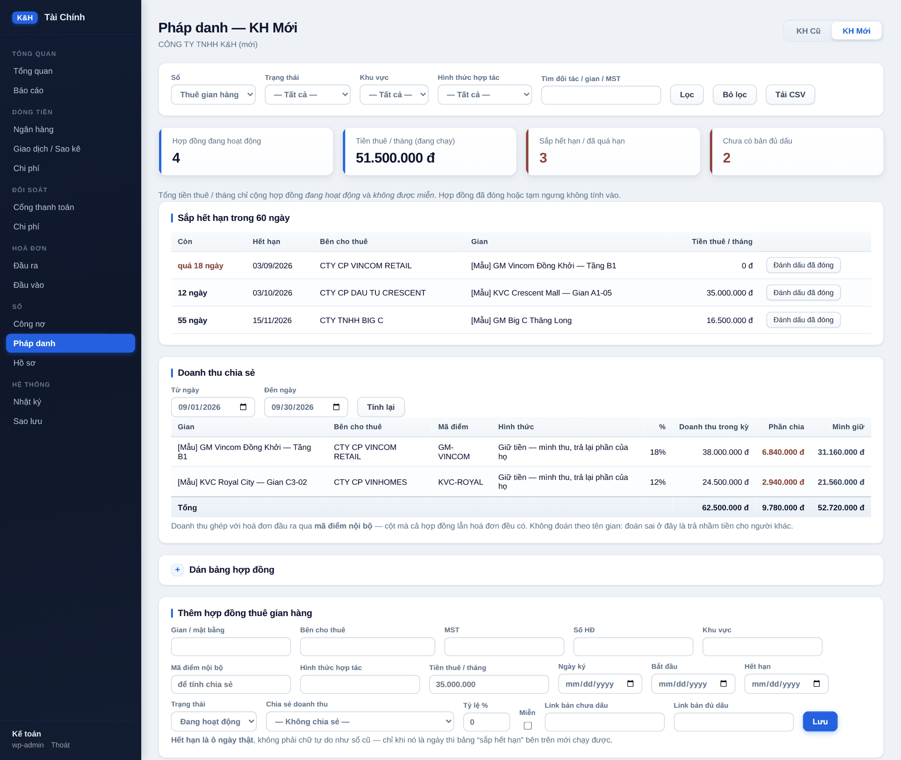
Sổ → Hồ sơ. Sổ lưu chứng từ giấy: có gì, file ở đâu, đã hạch toán chưa. Nút Dò nối tự nối chứng từ với bút toán trong sổ theo số chứng từ, và trả lời được câu ngược lại: bút toán nào trong kỳ chưa có chứng từ lưu.
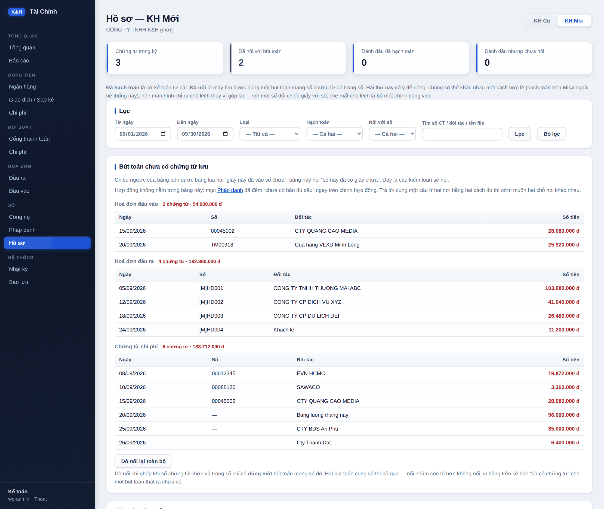
Bước thay được nhiều giờ Excel nhất. Máy gom tiền theo điểm, mỗi điểm một hoá đơn.
Luồng đầy đủ:
| tiền vào tài khoản (mỗi dòng mang mã cửa hàng) |
| → danh mục điểm: mã cửa hàng thành điểm xuất hoá đơn + mã Misa + khu vực |
| → cộng theo điểm trong kỳ |
| → mỗi điểm một hoá đơn, vào sổ Hoá đơn đầu ra |
Ba thứ máy không tự quyết, vì đoán sai thì ra một danh sách trông rất hợp lý mà sai — và không ai soát lại cái trông hợp lý:
Máy chỉ làm phần cộng và phần tách VAT — phần nó làm không sai.
Hoá đơn → Sinh từ sao kê. Chọn từ ngày / đến ngày, tick nguồn tiền, bấm Xem trước. Bốn thẻ số ở trên nói ngay tình hình:
| Sẽ xuất | Bao nhiêu hoá đơn |
|---|---|
| Tổng tiền | Tiền sẽ vào hoá đơn |
| Điểm bỏ qua | Tiền của điểm đã đặt cờ bỏ qua |
| Mã chưa có trong danh mục | Tiền sẽ KHÔNG vào hoá đơn nào |
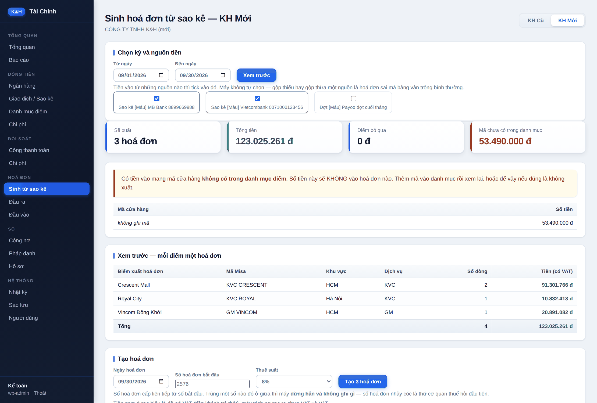
Xem trước xong thì điền ngày hoá đơn, số hoá đơn bắt đầu, thuế suất, rồi bấm nút tạo. Số cấp liên tiếp từ số bắt đầu.
Hoá đơn tạo ra nằm ở Hoá đơn → Đầu ra, mang ghi chú "Sinh từ sao kê" kèm kỳ, để sau này biết nó từ đâu ra. Sửa hay xoá như hoá đơn nhập tay.
So cái mình ghi với cái thực tế đã xảy ra.
Đối soát → Cổng thanh toán. Tạo một đợt (kênh nào, tiền về tài khoản nào, kỳ nào), dán bảng cổng gửi về, bấm chạy. Mỗi dòng: Ngày · Mã GD · Số tiền · Phí · Nội dung · Mã cửa hàng.
Máy ghép bốn lượt, chắc chắn giảm dần:
| 1 | Trùng mã giao dịch — chắc nhất |
|---|---|
| 2 | Trùng ngày và số tiền |
| 3 | Trùng số tiền, lệch ngày trong 3 ngày |
| 4 | Trùng số tiền sau khi trừ phí — cổng chuyển về số ròng |
Kết quả chia bốn nhóm:
| Khớp | Cổng có, ngân hàng có, số tiền bằng nhau |
|---|---|
| Lệch tiền | Cùng mã giao dịch nhưng số tiền không bằng |
| Thiếu | Cổng báo có mà ngân hàng chưa về — đi đòi cổng |
| Thừa | Ngân hàng có mà cổng không báo |
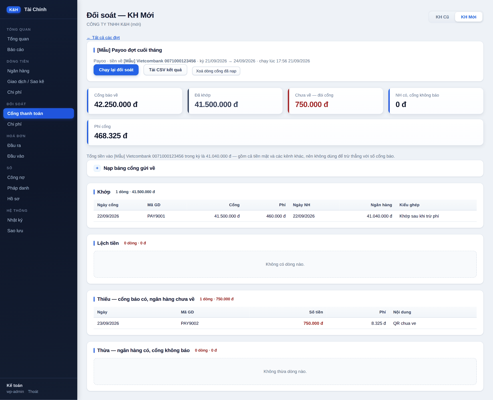
Đối soát → Chi phí. So chứng từ chi phí với tiền thật đã ra khỏi tài khoản. Ba nhóm: Khớp / Có chứng từ chưa thấy tiền ra / Tiền ra không có chứng từ.
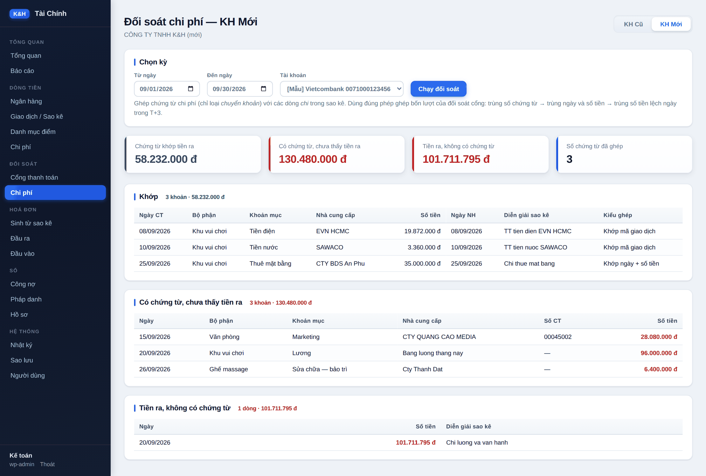
Sổ → Công nợ. Phải thu từ hoá đơn đầu ra, phải trả từ chi phí chuyển khoản. Chia theo mốc tuổi nợ 1–30 / 31–60 / 61–90 / trên 90 ngày.
Ghi trả từng đợt, hoặc bấm Tự ghép để máy đoán từ sao kê. Phép đoán cố ý dè dặt: hai chứng từ cùng số tiền thì máy im lặng, không đoán bừa.
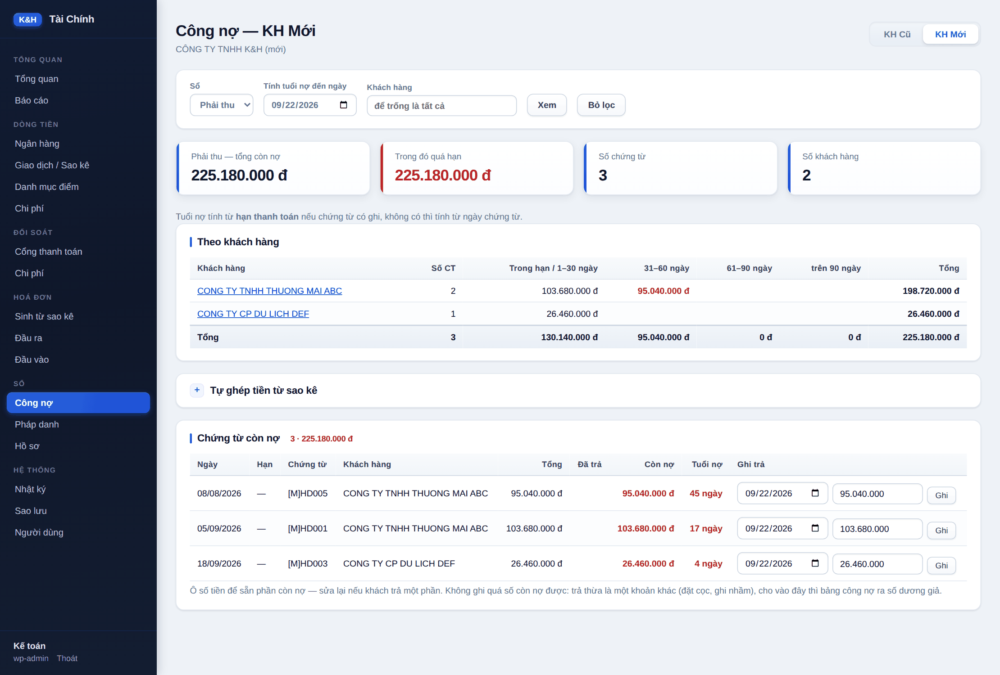
Số đã vào đủ thì lấy ra.
Tổng quan → Báo cáo. Một trang gom cả kỳ: dòng tiền từng tài khoản, bảng xu hướng 12 tháng, doanh thu theo khu vực và dịch vụ, chi phí cộng chéo, thuế GTGT, công nợ cuối kỳ, đối soát còn lệch. Có nút kỳ nhanh: tháng trước, quý, năm.
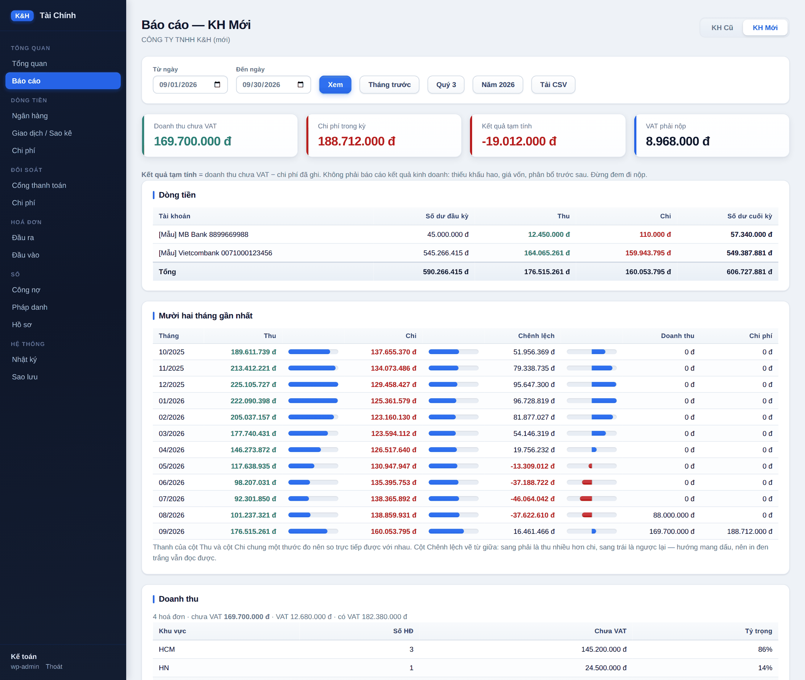
Nằm ở màn hình Hoá đơn đầu vào, và lặp lại trong Báo cáo.
VAT phải nộp = VAT đầu ra − VAT đầu vào được khấu trừ
Phần không được khấu trừ không vào trừ đây. Ra số âm thì gọi đúng tên là chuyển kỳ sau, không phải nhà nước trả lại — hai con số này không bao giờ cùng dương.
Bảng Theo thuế suất ở màn hình Hoá đơn đầu ra chính là mấy dòng điền vào tờ khai, khỏi lọc từng bậc rồi chép tay.
| Hoá đơn đầu ra | CSV đúng 22 cột file Đối soát VAT |
|---|---|
| Hoá đơn đầu vào | CSV kèm cột khấu trừ và lý do |
| Đối soát | CSV cả bốn nhóm kết quả |
| Pháp danh | CSV sổ hợp đồng |
| Báo cáo | CSV cả gói báo cáo kỳ |
| Sao lưu | JSON toàn bộ kho dữ liệu |
Ba thứ để số đã chốt không tự nhiên đổi.
Hệ thống → Nhật ký, khung khoá sổ. Đặt một ngày khoá cho mỗi pháp nhân: mọi bản ghi mang ngày từ đó trở về trước không thêm, không sửa, không xoá được.
Hệ thống → Nhật ký. Ai làm gì lúc nào. Xoá thì giữ lại nguyên văn bản ghi nên phục hồi được, đúng id cũ. Dán hàng loạt chỉ ghi một dòng tổng kết chứ không phải vài trăm dòng.
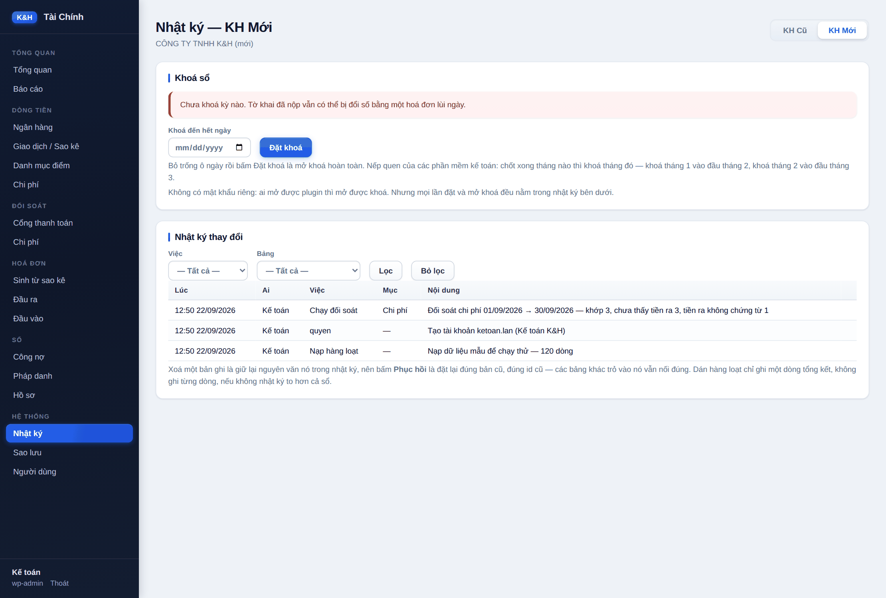
Hệ thống → Sao lưu → Tải tệp sao lưu (.json). Gồm cả hai pháp nhân và cả danh mục.
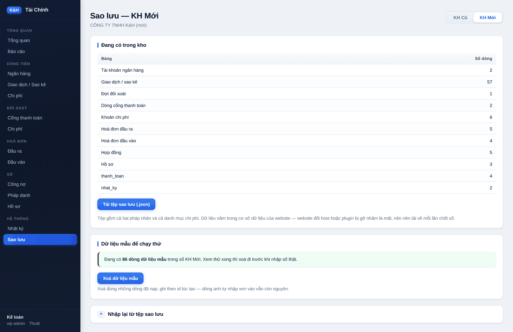
Thứ tự này đi từ nhập số đến ra kết quả, làm theo là không sót bước nào.
| TT | Việc | Ở màn hình |
|---|---|---|
| 1 | Nạp sao kê từng tài khoản (nhớ cột mã cửa hàng) | Giao dịch / Sao kê |
| 2 | Kiểm danh mục điểm: gian mới mở đã khai chưa | Danh mục điểm |
| 3 | Nạp bảng cổng gửi về, mỗi cổng một đợt | Đối soát → Tạo đợt → Dán |
| 4 | Chạy đối soát, đọc dải cảnh báo trước khi đọc bốn nhóm | Đối soát |
| 5 | Xem trước sinh hoá đơn, đưa "mã chưa có trong danh mục" về 0 | Sinh từ sao kê |
| 6 | Tạo hoá đơn, ghi lại số hoá đơn bắt đầu và kết thúc | Sinh từ sao kê |
| 7 | Nạp hoá đơn đầu vào | Hoá đơn đầu vào |
| 8 | Ghi chi phí theo bộ phận | Chi phí |
| 9 | Chạy đối soát chi phí | Đối soát → Chi phí |
| 10 | Ghép tiền khách trả, xem ai nợ quá hạn | Công nợ |
| 11 | Lưu chứng từ giấy, bấm Dò nối | Hồ sơ |
| 12 | Kiểm hợp đồng sắp hết hạn trong 60 ngày | Pháp danh |
| 13 | Xem tờ khai GTGT, chốt số phải nộp | Hoá đơn đầu vào |
| 14 | Xuất báo cáo tháng, tải CSV | Báo cáo |
| 15 | Tải tệp sao lưu về máy | Sao lưu |
| 16 | Khoá sổ đến ngày cuối kỳ vừa chốt | Nhật ký → Khoá sổ |
Triệu chứng — nguyên nhân — cách sửa.
| Thấy gì | Vì sao | Làm gì |
|---|---|---|
| Số dư cao gấp đôi thực tế | Dán sao kê hai lần, và sao kê không có cột mã giao dịch nên máy không chặn được | Xuất sao kê kèm cột mã tham chiếu rồi nạp lại từ sổ trắng |
| Thẻ "Mã chưa có trong danh mục" khác 0 | Có gian mới mở chưa khai vào danh mục điểm | Xem bảng ngay dưới, thêm mã vào Danh mục điểm |
| Sinh hoá đơn báo "Danh mục điểm còn trống" | Chưa nạp danh mục cho pháp nhân đang chọn | Danh mục điểm → Nạp danh mục hàng loạt |
| Bấm Tạo hoá đơn bị từ chối vì trùng số | Dải số định dùng đã có hoá đơn nằm giữa | Đổi số bắt đầu sang dải còn trống |
| Đối soát hiện dải vàng | Chọn nhầm tài khoản hoặc nhầm kỳ | Sửa đợt cho đúng tài khoản nhận tiền của cổng đó |
| Nhóm "Thừa" quá nhiều | Kỳ đối soát phủ cả tháng nên mọi khoản thu khác cũng rơi vào đó | Đặt kỳ hẹp quanh ngày cổng chốt tiền |
| Misa từ chối cả tệp hoá đơn | Có dòng chưa VAT + VAT không bằng có VAT | Nạp qua màn hình Hoá đơn đầu ra rồi xuất lại — máy sửa và báo số dòng đã sửa |
| VAT phải nộp cao bất thường | Chưa nhập hoá đơn đầu vào | Nhập đầu vào rồi xem lại tờ khai |
| Doanh thu chia sẻ ra 0 | Hợp đồng chưa gắn mã điểm nội bộ | Pháp danh → sửa hợp đồng → điền mã điểm |
| Không thêm/sửa được gì trong kỳ cũ | Kỳ đó đã khoá sổ | Nhật ký → mở khoá, sửa, rồi khoá lại |
| Kế toán không mở được /tai-chinh/ | Tài khoản chưa được cấp quyền vào sổ | Người dùng → Thêm người vào sổ |
| Mở /tai-chinh/ ra 404 | WordPress chưa ghi luật đường dẫn | Cài đặt → Đường dẫn tĩnh → Lưu |